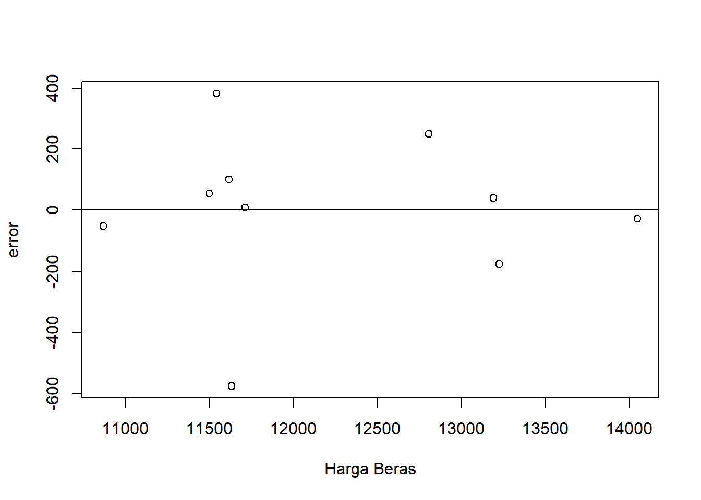
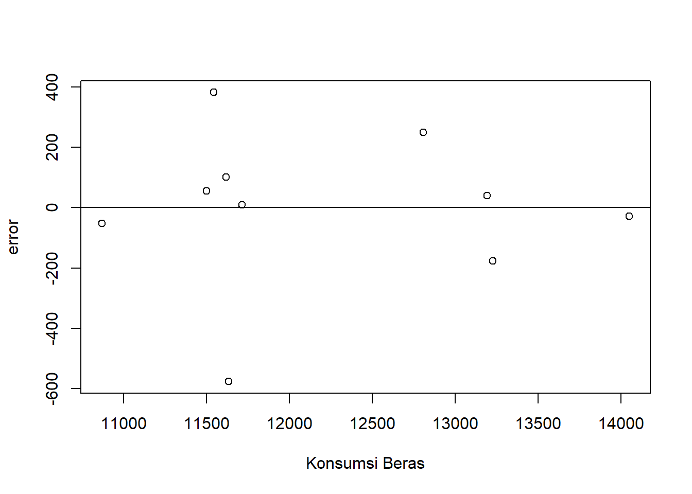
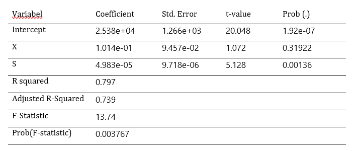

library(tidyverse)
library(readxl)Pengaruh Harga Beras dan Pendapatan Per Kapita Terhadap Konsumsi Beras di Indonesia
Metode Penelitian Politeknik APP Jakarta

1 Pendahuluan
1.1 Latar belakang
Pangan merupakan satu dari tiga kebutuhan primer penting dalam hidup yang harus dipenuhi oleh manusia. Dalam hal ini, beras menjadi makanan pokok yang selalu diusahakan ada di setiap rumah tangga. Hal ini dapat dilihat dari salah satu pameo lama yang berbunyi ana dina ana upa, yang berarti “ada hari ada butir nasi”. Keterkaitannya dengan harga,pendapatan dan tingkat konsumsi menjadi semakin jelas ketika dilihat dari perspektif ekonomi rumah tangga.
Harga beras menjadi faktor penting dalam menentukan tingkat inflasi dan stabilitas pasar pangan. Perubahan harga beras dapat secara langsung mempengaruhi daya beli masyarakatnya, terutama bagi masyarakat dengan pendapatan rendah yang memiliki proporsi besar dalam pengeluaran pangan.Hal ini sesuai dengan hasil penelitian terdahulu yang di lakukan oleh (Darma et al., 2018) bahwa dampak dari kenaikan harga suatu komoditas seperti sembako berakibat pada meningkatnya inflasi di Indonesia.
Pendapatan per kapita sering digunakan sebagai indikator kesejahteraan negara, standar pertumbuhan kemakmuran negara, sebagai pedoman bagi pemerintah dalam membuat kebijakan ekonomi, dan pembanding tingkat kemakmuran antarnegara.
Kiptia, 2018, dalam penelitiannya menyatakan bahwa harga kebutuhan pokok berpengaruh positif terhadap konsumsi masyarakat, karena konsumsi kebutuhan pokok tidak akan menurun meskipun harga naik atau turun.
1.2 Ruang lingkup
Dalam penelitian ini penulis mengambil objek penelitian dari Badan Pusat Statistik (BPS). Ruang lingkup pembahasan terdiri dari tiga variable, yaitu harga beras, pendapatan per kapita dan konsumsi beras. Data yang digunakan adalah data time series yaitu dalam kurun waktu 2013-2022.
1.3 Rumusan masalah
Hipotesis yang diajukan sebagai jawaban sementara terhadap permasalahan yang diajukan dalam penelitian ini yaitu:
H0 : Tidak ada hubungan signifikan antara konsumsi beras (y) dengan harga beras (x) atau pendapatan per kapita (s).
H1 : Ada hubungan signifikan antara konsumsi beras (y) dengan harga beras (x) atau pendapatan per kapita (s)
1.4 Tujuan dan manfaat penelitian
Tujuan dari penelitian ini adalah untuk mengetahui hubungan antara harga beras, perdapatan per kapita dan konsumsi beras di Indonesia. Adapun manfaat dari penelitian ini antara lain:
a. Bagi Penulis
- Proses penelitian memberikan kesempatan kepada penulis untuk mendapatkan pemahaman yang lebih mendalam tentang topik tersebut dan meningkatkan keterampilan penelitian.
- Temuan yang menarik dapat membuka peluang untuk penelitian lanjutan, proyek kolaboratif, dan pengembangan lebih lanjut. Juga menjadi bahan referensi atas topik terkait.
b. Bagi Instansi
- Hasil penelitian dapat menjadi sumber informasi yang berharga untuk pihak-pihak yang terlibat dalam pengambilan keputusan, penelitian lanjutan, dan analisis pasar.
- Analisis terkait dapat memberikan kontribusi terhadap perumusan kebijakan pangan dan ketahanan pangan di Indonesia.
1.5 Package
Packages yang digunakan antara lain sebagai berikut:
2 Studi pustaka
Harga adalah sejumlah uang yang ditukarkan untuk sebuah produk atau jasa (Kotler dan Amstrong, 2016). Harga adalah jumlah nilai yang diberikan oleh pelanggan untuk mendapatkan keuntungan dari memiliki atau menggunkan suatu produk atau jasa.
Pendapatan perkapita menurut Sukirno (2004) adalah pendapatan rata-rata penduduk suatu negara atau daerah pada suatu periode tertentu yang biasanya satu tahun.
Konsumsi merupakan kegiatan belanja untuk keperluan rumah tangga barang dan jasa (Mankiw, 2006). Konsumsi adalah aktivitas belanja barang dan jasa yang dilakukukan oleh rumah tangga. konsumsi sebagai pembelanjaan yang dilakukan oleh seseoarang atas barang dan jasa dengan tujuan untuk memenuhi kebutuhan.
3 Metode penelitian
3.1 Data
| Tahun | Harga Beras (X) | Konsumsi Beras (Y) | Pendapatan Per Kapita (S) |
|---|---|---|---|
| 2013 | 10,869.00 | 28,345.54 | 38,370,000 |
| 2014 | 11,500.00 | 28,692.11 | 41,900,000 |
| 2015 | 12,806.00 | 29,178.94 | 45,120,000 |
| 2016 | 13,191.00 | 29,150.00 | 47,960,000 |
| 2017 | 13,227.00 | 29,133.51 | 51,890,000 |
| 2018 | 14,048.00 | 29,570.00 | 55,990,459 |
| 2019 | 11,633.00 | 28,930.00 | 59,065,348.9 |
| 2020 | 11,713.00 | 29,370.00 | 56,000,000 |
| 2021 | 11,542.00 | 30,040.00 | 62,300,000 |
| 2022 | 11,617.00 | 30,200.00 | 71,000,000 |
Penelitian ini menggunakan data sekunder dengan bentuk data time series 2013-2022, data yang dipakai ialah data yang telah diolah dengan sumber Badan Pusat Statistik.
library("readxl")
data_uasS <- read_excel("C:/Users/LENOVO/Documents/SMT 3/UAS Metopen/data uasS.xlsx")
reg1<-lm(y~x+s,data=data_uasS)
data_uasS$m<-resid(reg1)
plot(data_uasS$x, data_uasS$m,xlab="Harga Beras",ylab="error")
abline(h=0)
Plot pengaruh error terhadap harga beras
library("readxl")
data_uasS <- read_excel("C:/Users/LENOVO/Documents/SMT 3/UAS Metopen/data uasS.xlsx")
reg1<-lm(y~x+s,data=data_uasS)
data_uasS$m<-resid(reg1)
plot(data_uasS$x, data_uasS$m,xlab="Konsumsi Beras",ylab="error")
abline(h=0)
Plot pengaruh error terhadap konsumsi beras
3.2 Metode analisis
Penelitian ini menggunakan regresi multivariat atau regresi berganda dengan 2 variabel independen 1 variabel dependen yaitu konsumsi beras. Spesifikasi yang dilakukan adalah:
\[ Y =\beta_0 + \beta_1 X+\beta_2S+ \mu \] Dimana:
Y adalah variabel dependen (konsumsi beras).
X adalah variabel independen pertama (harga beras).
S adalah variabel independen kedua (pendapatan per kapita).
β0 adalah intercept (konstanta).
β1 dan β2 adalah koefisien regresi yang menunjukkan dampak perubahan harga dan pendapatan terhadap konsumsi.
ϵ adalah kesalahan acak atau faktor yang tidak dapat dijelaskan oleh model.
4 Pembahasan
4.1 Pembahasan masalah

Hasil regresi yang telah didapat dimasukkan ke dalam rumus persamaan yang ada, sehingga menjadi:

Berdasarkan model regresi, terdapat dua faktor yang mempengaruhi konsumsi beras di Indonesia, yaitu harga beras (X) dan pendapatan per kapita (S). Secara spesifik, hasil analisis menunjukkan bahwa pendapatan per kapita berperan secara signifikan dalam membentuk pola konsumsi beras di seluruh Indonesia. Ketika pendapatan per kapita meningkat sebesar satu satuan, konsumsi beras diperkirakan akan meningkat sebesar 0.00004983 satuan, dan hal ini terbukti signifikan pada tingkat signifikansi 0.05 (p-value: 0.00136).
Di sisi lain, harga beras tidak memberikan kontribusi signifikan terhadap perubahan konsumsi beras di Indonesia. Meskipun koefisien untuk harga beras (X) positif (0.1014), hasil uji statistik menunjukkan bahwa kenaikan harga beras tidak signifikan dalam mempengaruhi konsumsi beras, dengan nilai p-value sebesar 0.31922.
Dengan R2 sebesar 0.797, model ini mampu menjelaskan sekitar 79.7% variasi dalam konsumsi beras di tingkat nasional. F-statistic yang signifikan pada tingkat signifikansi 0.05 (p-value: 0.003767) menunjukkan bahwa setidaknya satu dari variabel independen (pendapatan per kapita atau harga beras) memiliki pengaruh yang signifikan terhadap konsumsi beras secara keseluruhan.
4.2 Analisis masalah
Hasil regresinya adalah
reg1 <- lm(y ~ x + s, data = data_uasS)
summary(reg1)
Call:
lm(formula = y ~ x + s, data = data_uasS)
Residuals:
Min 1Q Median 3Q Max
-576.31 -45.98 23.73 89.11 381.73
Coefficients:
Estimate Std. Error t value Pr(>|t|)
(Intercept) 2.538e+04 1.266e+03 20.048 1.92e-07 ***
x 1.014e-01 9.457e-02 1.072 0.31922
s 4.983e-05 9.718e-06 5.128 0.00136 **
---
Signif. codes: 0 '***' 0.001 '**' 0.01 '*' 0.05 '.' 0.1 ' ' 1
Residual standard error: 290.1 on 7 degrees of freedom
Multiple R-squared: 0.797, Adjusted R-squared: 0.739
F-statistic: 13.74 on 2 and 7 DF, p-value: 0.003767Secara keseluruhan, untuk koefisien X; dengan setiap satuan kenaikan harga beras (X), konsumsi beras (Y) diperkirakan meningkat sebesar 0.1014 satuan, walaupun tidak signifikan (p=0.31922). Disisi lain, untuk koefisien S: dengan setiap satuan kenaikan pendapatan per kapita (S), konsumsi beras (Y) diperkirakan meningkat sebesar 0.00004983 satuan, dan ini signifikan (p=0.00136).
5 Kesimpulan
Setelah dilakukan penelitian melalui sistem regresi multivariat, maka dapat disimpulkan antara lain:
Harga Beras (X): Tidak ada bukti yang cukup untuk menyimpulkan adanya hubungan signifikan antara harga beras dan konsumsi beras (Y) pada tingkat signifikansi 0.05 (p=0.31922).
Pendapatan Per Kapita (S): Ada bukti yang cukup untuk menyimpulkan adanya hubungan signifikan antara pendapatan per kapita dan konsumsi beras (Y) pada tingkat signifikansi 0.05 (p=0.00136).
6 Referensi
Darma, D. C., Pusriadi, T., & Hakim, Y. P. (2018). Dampak kenaikan harga komoditas sembako terhadap tingkat inflasi di Indonesia. Prosiding Seminar Nasional: Manajemen, Akuntansi, dan Perbankan, 1(1), 1048–1074. http://conferences.uin-malang.ac.id/index.php/semnasfe/article/view/821
Gunarsih, C. M., Kalangi, J. A. F., & Tamengkel, L. F. (2021). Pengaruh Harga Terhadap Keputusan Pembelian Konsumen Di Toko Pelita Jaya Buyungon Amurang. Productivity, 2(1), 69–72. Retrieved from https://ejournal.unsrat.ac.id/v3/index.php/productivity/article/view/32911
Hanum, N. (2017). Analisis Pengaruh Pendapatan Terhadap Prilaku Konsumsi Mahasiswa Universitas Samudra di Kota Langsa. Jurnal Samudra Ekonomika, 1(2), 107-116.
Kiptia, A. (2018). Pengaruh pendapatan perkapita dan harga kebutuhan pokok terhadap tingkat konsumsi masyarakat di Tulungagung tahun 2014-2015 (Skripsi). Universitas Islam Negeri Sayyid Ali Rahmatullah. Tulungagung.
Kotler, P., & Armstrong, G. (2016). Marketing: An Introduction (Edisi ke-13). Pearson Education.
Mahardani, I. A. S., & Indrajaya, I. G. B. (2018). Pengaruh Harga dan Pendapatan Konsumen Terhadap Permintaan Janur Di Desa Ubud, Kabupaten Gianyar. E-Jurnal EP Unud, 7(5), 1084-1111. https://doi.org/10.1234/eep.12345 ISSN: 2303-0178
Mankiw. (2006). Teori Ekonomi Makro. Erlangga.
Maryadiningsih, E. (2021). Pengaruh Pendapatan Dan Gaya Hidup Terhadap Pola Konsumsi Masyarakat Muslim Di Surabaya Selama Masa Pandemi Covid-19 Ditinjau Dari Perspektif Etika Konsumsi Islam. Jurnal Ekonomi, Manajemen, Bisnis, dan Sosial (EMBISS), 1(4), 386–396.
Nasution, A. E., Putri, L. P., & Lesmana, M. T. (2019). Analisis Pengaruh Harga, Promosi, Kepercayaan Dan Karakteristik Konsumen Terhadap Keputusan Pembelian Konsumen Pada 212 Mart Di Kota Medan. Proseding Seminar Nasional Kewirausahaan, 1(1), 194–199. http://jurnal.umsu.ac.id/index.php/snk/article/view/3594/3325
Yanti, Z., & Murtala, M. (2019). Pengaruh pendapatan, jumlah anggota keluarga, dan tingkat pendidikan terhadap konsumsi rumah tangga di Kecamatan Muara Dua. Ekonomika Indonesia, 8(2), 72-81. https://doi.org/10.29103/ekonomika.v8i2.972